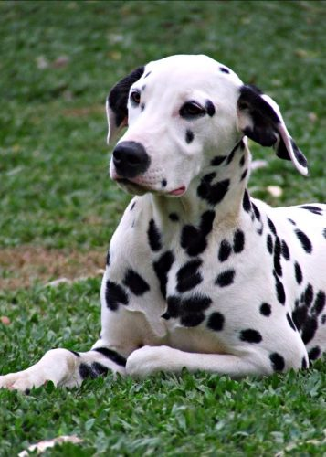
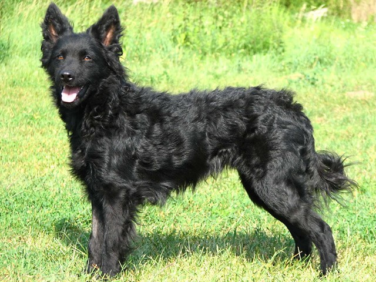
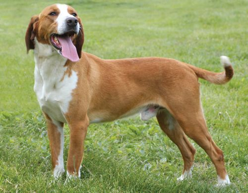

Dálmata
O Dálmata é provavelmente uma das raças mais reconhecidas do planeta. Este belo animal é um companheiro charmoso, afetuoso e fiel, ativo, alegre sensível e amigável, inteligente e dócil e pode ser ensinado com facilidade. Não é agressivo, ladra pouco e, apesar de não ser desconfiado, mostra ser um bom guardião. Revela-se um guia eficaz para cegos. O Dálmata ama ter atenção e tem um forte desejo de agradar.
| Expectativa de Vida | Altura | Peso | |
|---|---|---|---|
| Mínimo | 10 Anos | 54 cm | 24 kg |
| Máximo | 13 Anos | 61 cm | 32 kg |
Pastor-Croata
Este canino é raramente visto fora de sua terra natal, sendo então desconhecido por muitos. A sua função é a de guardar rebanhos e quintas. Cheio de energia, quando tratado como cão de companhia requer espaço e atividade física. Ele é um cão alerta, ágil, perspicaz e inteligente, com enorme energia e com uma forte necessidade da companhia humana. É um cão pastor carinhoso e modesto e muito leal ao seu dono.
| Expectativa de Vida | Altura | Peso | |
|---|---|---|---|
| Mínimo | 10 Anos | 40 cm | 13 kg |
| Máximo | 14 Anos | 53 cm | 20 kg |
Sabujo de Posavac
O sabujo de Posavac, originalmente chamado Posavski Gonic, é uma raça considerada das mais comuns nas planícies do rio Sava, próximo à fronteira entre a Croácia e a Bósnia. Rápido, resistente, dinâmico, este cão com voz alta e sonora, dotado de bom faro, caça em todos os terrenos, principalmente a lebre e o veado. Muito afetuoso com seu dono, tem um bom temperamento.
| Expectativa de Vida | Altura | Peso | |
|---|---|---|---|
| Mínimo | 12 Anos | 46 cm | 22 kg |
| Máximo | 15 Anos | 58 cm | 25 kg |